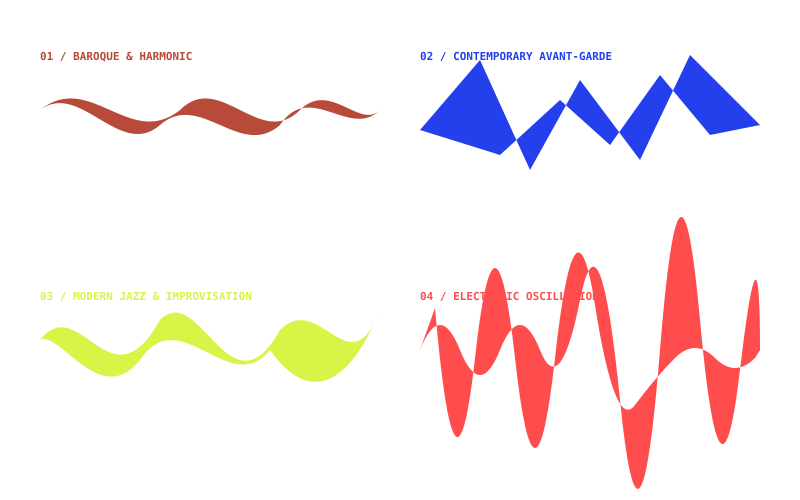
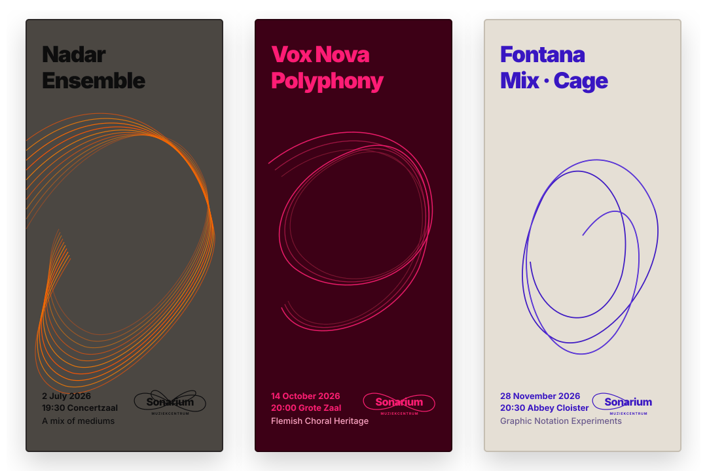

CENTRE DE MUSIQUE · GHENT
Alive in every moment.
Past, present & future.
Shifting away from historic architectural clichés and rigid musical staves toward a generative representation of music as an organic, living acoustic wave.
GENERATIVE GRAPHIC NOTATION ENGINE
The Living Oscilloscope Ribbon
Sonarium
MUZIEKCENTRUM
MODE: 01 BAROQUE CHAMBER · HARMONIC FIFTH (3:2)
CONCEPTUAL FOUNDATION
From Rigid Clefs to Fluid Waves
Traditional cultural venues often rely on predictable symbols: five-line staffs, treble clefs, or historical building silhouettes.
For Sonarium, the identity draws directly from composer John Cage’s indeterminate graphic scores (such as Fontana Mix and Aria) paired with the physical electrical waveforms captured by an analogue oscilloscope.
“NOTATION IS NOT A PRISON; IT IS A CHOREOGRAPHY OF FREQUENCIES.”

MATERIAL APPLICATION
Physical Brand Artifacts
APPLIED IDENTITY
Concert Season Exhibition Posters
SEASON MOCKUPS · 3 OF 12
